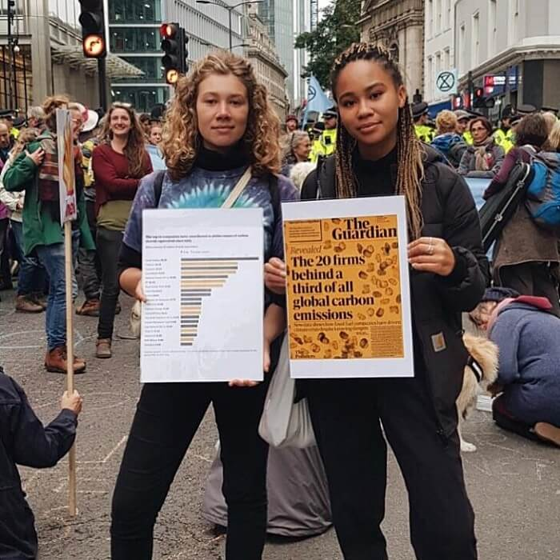
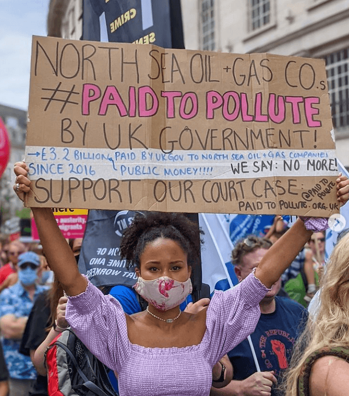
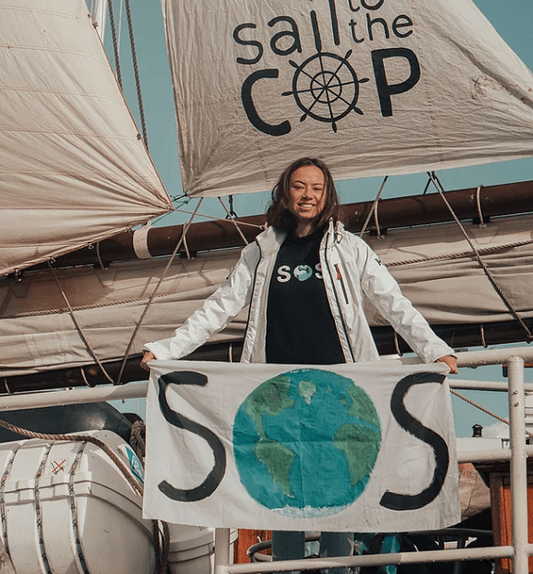
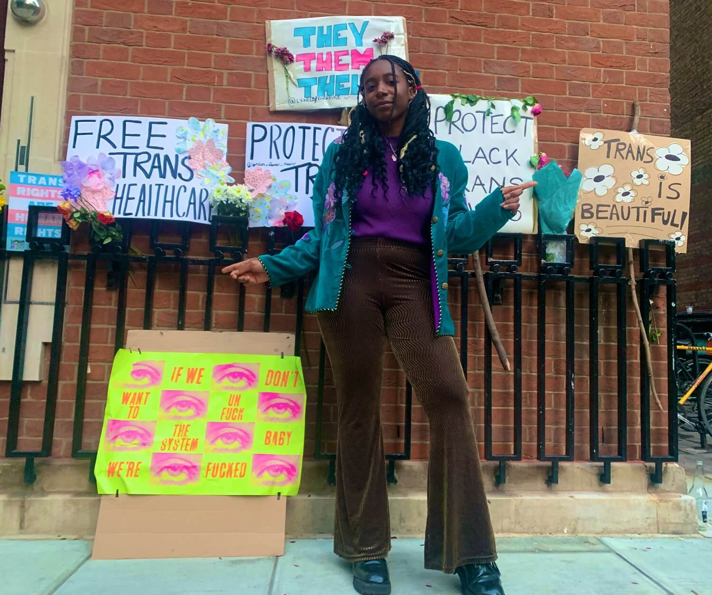

More and more young people are demonstrating their talents in communication, research and leadership through social media, utilising the power of activism to educate the public about climate change.
This article explores the activism of young people in a series called ‘Environmental influencers’. From climate justice, to fashion campaigning and sustainability, there are many young people who are raising awareness of these issues
through means such as social media.

Josephine Becker (left) and Mikaela Loach (right) protesting outside the Government Oil and Gas Fiscal Summit by Liverpool Street Station, London, to address the fossil fuel companies exploiting the earth. | The Guardian / Instagram
Some stand out activists include the Yikes Podcast with Josephine Becker and Michaela Loach, alongside their recent campaign to sue the UK government, Tori Tsui through her involvement in Sail for COP and Sail for Climate Action. Finally,
Dominique Palmer and her relationship with Fridays for Future and stopping the Cambo field oil and gas development west of the Shetland islands by the UK Government.
The podcast that makes you go ‘YIKES!’ about the current climate change and environmental crisis. Founded by Josephine Becker
(@treesnpeace) and Mikaela Loach
(@mikaelaloach), the podcast offers an honest discussion on the dangers of ecofascism, racism and
greenwashing.
Their discussion on greenwashing by the media clearly highlights the disconnect between the impact of individual action, such as recycling, and actively campaigning against the big polluting companies. By promoting the latter, we will be
able to see the efforts needed to save the planet in time. The public and their social media followers are hopefully becoming more aware that making personal lifestyle changes will not be enough to mitigate climate change .
During Mikaela’s and Jo’s involvement with Climate Camp Scotland, they highlighted that individual change was not sufficient to change the climate crisis. Everyone needs to be reminded that big multinational corporations , such as Shell and
BP, continue to be the biggest polluters in the world.

Mikaela at a rally campaigning in support of Paid to Pollute, a movement to sue the UK government for failing to follow the Paris Climate Agreement. | Instagram / Mikaela Loach
We must not be distracted by greenwashing tactics of companies such as BP, for example with their new campaign on how to
calculate and offset our own carbon footprint and travel emissions, when their own activities are more harmful. Big mass actions will hopefully make a significant change in plastic
production or meat consumption. Additionally, they discuss topics such as the dangers of eco-facism and racism in the current activism scene.
In May 2021, Mikaela and a group of activists sued the British Government for using public money to fund the oil and gas industry. The
@paidtopollute campaign urges the UK Government to honour the Paris Climate agreement, an international pledge to keep
countries accountable and limit the increase of temperature to 1.5 to 2°C by reducing their carbon footprint emissions. The UK Government, alongside many others, signed on to make financial decisions consistent with these agreements.
‘Since signing the Paris Agreement in 2016, the UK Government has paid £3.2bn of public money to North Sea oil and gas companies.’
The campaign found that big oil companies have been benefitting from the UK’s generous tax policies. In 2020, Shell paid the UK government negative $91.1 million (€82 million) in tax according to Pay to Pollute. Essentially meaning that the
UK Government paid Shell almost $100 million, which went towards executive payouts to their shareholders.
This claim also addresses the Government’s ease of using public money to subsidise big polluters, instead of low carbon industries—the ones which the public should support. The campaign also found the UK’s deal with North Sea oil and gas
companies was unlawful due to the deal being made from public expenditure, whilst failing to carry on their duty to ‘maximise economic recovery” (MER). Instead, making billions off the burning fossil fuels.
Tori is an intersectional climate justice activist and mental health advocate living in Bristol. She is an organiser and writer for the Bad Activist Collective
(@badactivistcollective) where she talks about a variety of issues, such as mental health and
eco-anxiety.
Tori discusses how often black, indigenous and people of color (BIPOC) and marginalised communities are forgotten in climate change discussions, when these groups are the most at risk. Tori, a Eurasian, is an advocate for global south and
BIPOC representation in climate activism. She highlights practices originating from Asia that have been around for decades, such as using tin lunch boxes and being vegan—which are often seen as ‘trends’ online by those who show themselves
as zero-waste pioneers.
Tori explains, ‘As conversations around intersectional climate justice slip into more ‘mainstream’ activism, I ask us all not to trivialise intersectionality as a buzzword and instead dig deeper in recognising our collective complicity in
struggle. It is imperative that we are also mindful of the dominance of white struggle in the climate crisis, and in turn create space for our BIPOC communities to speak about their struggles’.
Asian countries, such as China, suffer from high levels of air pollution. Tori, who lived on the border of Shenzhen in Hong Kong, explained how the world needs to remember that China has an incredibly overactive manufacturing industry
because of US and European demands for low-cost goods. The end message is not to point fingers, but to be mindful of others. We need to be mindful of asian citizens and children, who are growing up in these areas of overwhelming pollution.
Tori Tsui was born in Hong Kong and now lives in Bristol, UK. She writes about the environmental crisis and its detrimental effects on BIPOC communities. | Instagram / Tori Tsui
Tori’s involvement in the campaign
Sail for Climate Action Unite for Climate Action was impactful. In 2020, Tori coordinated 36 activists to sail the Atlantic Ocean and to bring Latin American, indigenous and Caribbean young activists together, in order to attend
the United Nations Climate Change Intersessional SB52.
Previously in 2019, she also participated in the United Nations Climate Change Conference, COP25, in which she was sponsored by designer Stella McCartney to sail with a diverse group of young thinkers to COP25, which was due to be hosted in
Chile, before being cancelled. Additionally, this project showcased the growing impact that the aviation industry has on the atmosphere, for this reason, the group decided to travel by boat rather than by plane.
Tori: ‘...to call me the ‘Asian’ Greta is disrespectful not only to me but to Greta in her uniqueness. I am not trying to be Greta. I will never be Greta. Too many BIPOC are prefaced by a young white teenager. Stop perpetuating cults of
personality in a world where lots of people need a seat at the table.’

Tori is an organiser for Sail to COP, which is supporting Latin American, Indigenous and Caribbean young activists to attend COP26. Tori herself made the trip by boat in 2019. | Tori Tsui / Sail for Climate Action
A London-based climate justice activist, writer and speaker. She believes young people have the power to drive change. She is part of the UK Student Climate Network (UKSCN), Fridays for Future (FFF) International,
Extinction Rebellion (XR) Youth and a speaker for COP25.
FFF
(@fridaysforfuture) was started in 2018 by 15-year old Swedish student, Greta Thunberg. Her actions inspired students and climate activists around the world. FFFs message is for the global north to cut emissions, enforce anti-racist
climate reparations
and cancellation of debts, recognise climate crisis is a risk to humanity, biodiversity, indigenous communities, and to stop criminalisation of indigenous communities.
‘Hashtags and snappy videos are good, she said, but really making an impact will require more work. Twitter protests in which activists send out messages aimed directly at selected officials, and phone-banking, in which they telephone them
en masse, are two of the ideas under consideration’, explains Dominique.
Dominique Palmer is a young London-based activist who participates in student strikes with Fridays for Future (FFF) and Extinction Rebellion (XR) Youth . | Instagram / Dominique Palmer
Dominique has been a representative of FFF in the UK, which includes organising a climate protest. These were cancelled due to the COVID-19 pandemic and thus taken to social media in the form of a digital strike. Although a social media
protest may not create the same impact, messaging selected officials using Twitter might still be a viable strategy to make the voices of the youth heard during the pandemic.
Another campaign that Dominique has brought awareness to is the recent proposal by the UK Government to allow the
Cambo oil field, an offshore oil rig to the west of Shetland, to start oil and gas production. This news comes at odds with the UK
hosting the upcoming COP26 summit in Glasgow. The decisiveness of top officials, including David Duguid, Scotland’s Office minister; Nicola Sturgeon, Scotland’s First Minister; and Boris Johnson, the UK’s Prime Minister, to approve this oil
development has inspired a
#STOPCAMBO campaign.
Dominique: ‘The Cambo field is the second largest oil and gas development waiting for approval, and if it gets the green light, it will be the first UK oil and gas project to be approved since the International Energy Agency Net Zero report
called for no new investment in oil and gas earlier this year.’

Dominique protesting for trans rights. She also has been protesting online and offline against the Cambo field development. | Twitter / Dominique Palmer
If given the go ahead, Cambo will be the second largest oil and gas development in the region, with drilling starting as early as 2022 and producing oil for the next 25 years. The Cambo development proposal appears to be a contradiction to
the UK’ Government’s promises, having asserted themselves to be the climate leaders of the world. Dominique and many other activists agree that the UK government’s actions go directly against the 1.5°C target established in the Paris
Agreement and the UK’s own climate targets.
Dominique has joined the #STOPCAMBO movement on social media and on the streets of London through
the Fossil Free London group. So many other young activists have taken to Twitter and Instagram to promote this campaign, and ask the government to cease this
proposal which everyone can achieve by writing to their MP
(https://www.writetothem.com/) and joining the campaign.
‘There is more to climate activism than Greta Thunberg (even if she is great).’
—Tori Tsui
Featured Image: Environmental influencers | Mikaela Loach / Dominique Palmer / Tori Tsui
Loach, M., van Sweeden, K., Cox, J. (2021) Paid to pollute: What's the problem? Available at: https://paidtopollute.org.uk/learn/ [Accessed 28
August, 2021]